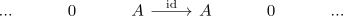

homology functor in general not conservative
Proposition
Let $\mathcal{A}$ be an abelian category, $\mathrm{Ch_*}(\mathcal{A})$ be the category of chain complexes. Then the homology functor is in general not conservative
Proof
Let $A \in \mathrm{Ob}(\mathcal{A}}$ be an object different from the zero object. Then consider the sequence
